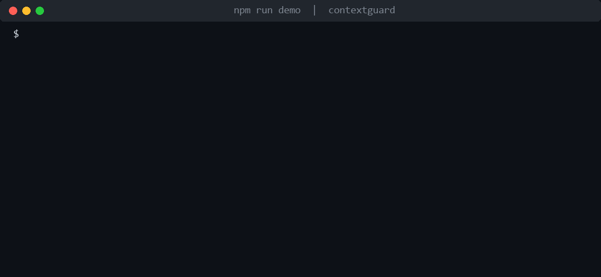
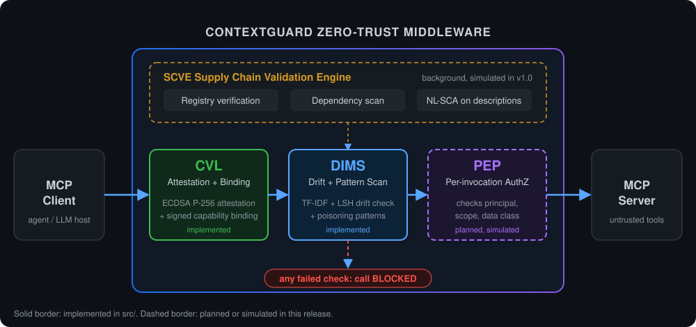

Zero-trust middleware for Model Context Protocol agent pipelines. Verify every tool, every call, before your agent acts on it.

MCP does not require tools/list to be authenticated, and whatever a server returns lands in the model's context. A malicious or compromised server can hide instructions in a description, or change a tool after you approved it.
Tool definitions are signed at approval time. Any later mutation breaks the binding and the call is blocked.
Pattern scan plus a TF-IDF and LSH fingerprint catch hidden instructions and semantic drift.
ECDSA P-256 attestation with a fresh nonce on every invocation.
Provenance and dependency checks. Simulated in this release, planned for full instrumentation.
Each call passes CVL, then DIMS, then PEP. A failure at any stage blocks it. SCVE runs in the background.

Solid borders are implemented in src/. Dashed borders are planned or simulated in this release.
Hand-crafted 40-entry corpus: 15 tool poisoning, 8 rug pull, 7 supply chain, 10 benign baselines.
| Category | TP | FN | Recall |
|---|---|---|---|
| Tool poisoning | 14 | 1 | 93.3% |
| Rug pull | 8 | 0 | 100% |
| Supply chain* | 7 | 0 | 100% |
*Supply chain detection simulates SCVE checks pending full instrumentation. The one miss (TP-006) is a privilege-escalation phrasing that evades the current regex patterns. Latency measured over 1,000 invocations on an Intel Core i7-1185G7, Node.js 20.
git clone https://github.com/sunilgentyala/contextguard.git cd contextguard npm install npm run demo # the run in the GIF above npm run evaluate # full corpus evaluation
import { establishSession, verifyToolInvocation } from './src/index';
const session = establishSession('my-server', serverToolDefinitions);
const result = verifyToolInvocation(session, 'tool_name', currentTools);
if (!result.authorized) console.error('BLOCKED:', result.reason);
Node.js 18+. No external ML dependencies, only the built-in crypto module.
Gentyala, S., Srinivas, Ch., Dhumpati, R. A Zero-Trust Supply Chain Security Framework for Model Context Protocol-Based AI Systems. 2026 5th International Conference on Computer Networks, Big Data and IoT (ICCBI), Dubai, pp. 913-919. DOI: 10.1109/ICCBI68589.2026.11619741
Authors: Sunil Gentyala (HCLTech, IEEE Senior Member), Ch Srinivas (Sir C R Reddy College of Engineering), Raghu Dhumpati (Bahrain Polytechnic). MIT licensed code; corpus terms in NOTICE.md.